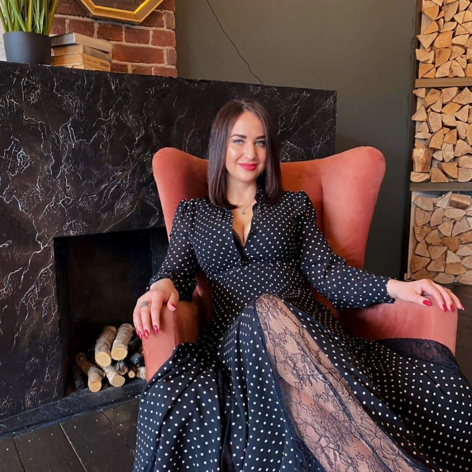
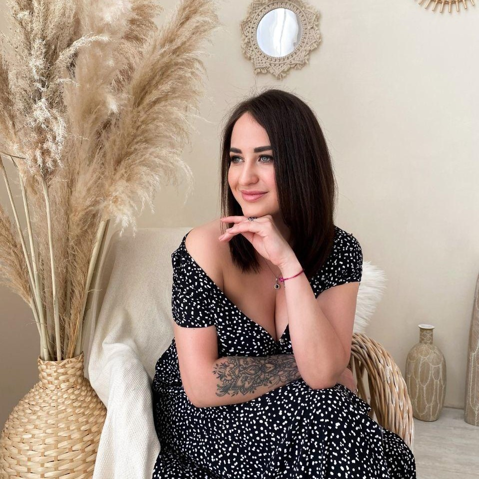

Екатерина Коган
Гештальт-терапевт, таролог,
рунолог, НЛП-практик
Екатерина Коган
Гештальт-терапевт, таролог,
рунолог, НЛП-практик
обо мне
обо мне
Таропсихолог Екатерина Коган
Я глубоко изучаю эзотерику и помогаю другим найти свой путь к осознанности. По образованию я магистр педагогической психологии. Так же продолжаю постдипломное образование в Санкт-Петербургском Институте Гештальта.

Моя специализация
Моя специализация
- карты таро
- руны
- медитации
- психотерапия
- эзо-коуч
- женские практики
- самопознание
- распаковка личности клиента
У каждого в жизни свой путь, своя миссия
У каждого в жизни свой путь, своя миссия
Я пришла в этот мир, в этом воплощении, направлять, учить, помогать, служить людям и пространству. Таро и руны, медитации, множество инструментов, лишь для одного - принести свет людям, открыть дар жизни, научить знать себя и уметь общаться с высшими силами.
Опираясь на основу мира, я применяю именно тот инструмент, который нужен вам, даю именно ту информацию, которая идет к вам.
А взяв своё, вы с легкостью встанете на свой путь, обретете личный смысл, организуете личную жизнь, решите материальные и нравственные проблемы.
Я очень счастлива жить свою жизнь
Я очень счастлива жить свою жизнь
Через свои проекты я помогаю людям найти себя, свое предназначение, решать большие и маленькие трудности и просто жить лучше, чем сейчас.
- хотите перемен в жизни, работе и отношениях?
- запутались в своих мыслях, желаниях, целях и не понимаете, чего действительно хотите?
- нужно сделать выбор, и хотите уверенности, что он будет лучшим?
- хотите двигаться дальше, но не понимаете куда?
Тогда я тот человек, который вам нужен!
Вы найдете ответы на свои вопросы, получите четкую и ясную стратегию действий, обретете внутреннюю силу и спокойствие, и отбросите все, что вас тормозит и мешает.
Что я могу предложить:
Практикум “Сила женской энергии”
Мы приходим в этот мир в теле женщины, чтобы сложить яркий пазл жизни: принимать и отдавать любовь, получать удовольствие, находиться в уюте и комфорте.
Но в современном мире женщина чаще использует мужские энергии.
Контролировать, еще больше на себя взваливать, находиться в воинственном настроении, постоянном стрессе, доказывая миру свою самостоятельность.
Мужские энергии истощили женщину...
Как следствие изменилась не только внешняя жизнь, но и внутренняя. Потеряна легкость бытия, способность наслаждаться, радоваться и как следствие “магнитить” в свою жизнь любые цели и желания.
В современном мире женщина уже пожинает плоды своей ориентации на мужской путь:
- сбитый/слабый гормональный фон;
- отсутствие женского магнетизма;
- проблемы в отношениях с противоположным полом;
- проблемы с женским здоровьем;
- бесконечные трудности и как следствие хроническая усталость.
Хотите наконец-то закрыть дверь в прошлую жизнь и открыть для себя тайны вдохновляющего женского пути?
Тогда пора окунуться в мир магии - “Магии Женственности” вместе со мной!
Я предлагаю вам три пакета “Магии Женственности”, которые помогут вам пробудить свою истинную природу. При выполнении практик, которые описаны в пакетах, вы буквально за считанные недели полностью измените свою жизнь.
Пакет Лайт
1000₽
440₽
- лунная магия;
- дни женских энергий;
- ритуальная ванна для раскрытия женских энергий;
- медитация на открытие истинной женской природы;
- аффирмации;
- дыхательные практики.
Доступ ко всем материалам открывается после оплаты
Пакет Стандарт
3000₽
2200₽
- все практики и информация из пакета лайт;
- упражнения, раскачивающие женскую силу;
- техники для прокачки женского либидо;
- косметологические секреты красоты;
- мандалы в борьбе за женственность;
- бонусом к пакету можно задать три вопроса картам Таро.
Доступ ко всем материалам открывается после оплаты
Пакет Максимум
4500₽
3500₽
Премиальный пакет разделен на две части - с практиками и техниками для одиноких и замужних дам. Вы покупаете тот формат, который подходит вам. В пакет входит полностью вся информация из пакетов Лайт и Стандарт.
Одинокие женщины благодаря пакету Максимум “Магия женственности” узнают:
- причины женского одиночества и как от него уйти;
- попробуют практику на раскрытие женственности;
- используют мощную технику, позволяющую познакомиться с новым достойным мужчиной.
- в подарок к пакету расклад на Таро ”Анализ одиночества”;
- мандалы на прокачку женской энергетики.
Если вы в отношениях, пакет Премиальный “Магия Женственности” позволит вам больше узнать:
- почему отношения в паре могут портиться и эффективные техники, как с этим бороться;
- практика активизации женской силы;
- техника, которая разнообразит вашу сексуальную жизнь с партнером;
- расклад на Таро “Наши отношения”;
- мандалы для гармонизации любовных отношений.
Доступ ко всем материалам открывается после оплаты
обучение таро
Что делать в непонятной ситуации?
Когда не знаешь, у кого спросить совета, когда не понимаешь, как поступить и что делать дальше.
Когда о спокойствии можно только мечтать, а вся энергия сливается в тревогу и хаотичные действия.
-
А что, если…
- Ты научишься любую непонятную ситуацию превращать в понятную?)
- Ты сможешь узнавать информацию, которую нигде не найти?
- Ты станешь понимать то, что является загадкой?
Как тебе такая перспектива?
Я открываю набор на свой обучающий курс по картам Таро!
Если ты готова погрузиться в волшебный мир Таро, научиться видеть скрытое и понимать недоступное, приглашаю тебя к себе на обучение!
-
Структура и содержание курса
- Истоки Таро
- Выбор колоды
- Этика таролога
- Структура колоды
- Осознанность. Человек с позиции – дух, душа, текущее воплощение
- Стихии. Связь Таро со стихиями
- Старшие Арканы Таро с позиции основ Мироздания
- Связь Старших Арканов Таро со стихиями, астрологией и нумерологией
- Определение задач души текущего воплощения по дате рождения
- Младшие Арканы Таро
- Придворные Арканы
- Лунные циклы и их влияние на достоверность раскладов
- Солнечные циклы и их влияние
- Повышение осознанности и магичности
- Вопросы к картам и сроки в раскладах
- Основы консультирования, особенности процесса предсказания
- Личные наработки и тайны автора курса
- Практические занятия
ВСЁ ЭТО ТЫ УЗНАЕШЬ И ОСВОИШЬ ВСЕГО ЗА 2 МЕСЯЦА:
- теоретических и практических онлайн-занятий со мной по 1.5 часа 2 раза в неделю
- постоянной поддержкой и обратной связи от меня
- обучения в группе единомышленников (общение в общем чате)
Что ещё тебе будет доступно на курсе:
- Раздаточные материалы и шпаргалки со всеми значениями карт
- Разбор домашних заданий и раскладов лично со мной
- Сертификат о прохождении курса!
консультации таро
У вас накопилось много вопросов?
Инструмент, который позволит получить ответы на все вопросы - карты Таро.
Какие проблемы поможет решить этот инструмент:
- найти ответ на вопрос , который давно мучает;
- наконец то сделать выбор, остановить эмоциональные качели;
- разорвать шаблоны поведения;
- понять, почему не получается то или иное действие;
- создать единую картину событий и ситуаций;
- найти причинно-следственные связи;
- проанализировать ситуацию;
- взглянуть на ситуацию под новым углом;
- найти новые пути решения вопроса;
- навести порядок в вашей голове, когда вы устали, запутались и не понимаете, что делать дальше.
Максимально эффективно и детально ответить на все вопросы, которые возникли в вашей голове, поможет консультация таролога.
Консультация подойдет людям, у которых сформировалось очень много вопросов, или же когда и вопроса как такового нет, но есть потребность что-то поменять — в себе или в своём окружении.
Что поможет узнать таро-консультация:
- Где вы сейчас? Когда вы находитесь в гуще событий, очень сложно адекватно оценивать все происходящее. Невозможно сделать правильный шаг и принять правильное решение.
- Получить оценку ситуации с позиции стороннего наблюдателя, не искаженную эмоциями и страхами.
- Расскажет, почему вы оказались здесь. Вы наконец-то сможете понять причину того, почему вы оказались в той точке, в которой находитесь сейчас.
- К чему все приведет? На консультации вы узнаете перспективы развития событий, а это в свою очередь поможет грамотно спланировать свою жизнь, дабы избежать ошибок и сложностей.
- Какие варианты развития событий существуют? А также как вам поступить, чтобы получить максимально успешный для вас исход в той или иной жизненной ситуации.
Как заказать консультацию с тарологом ?
Для начала определитесь, какой вид консультации вам подходит. Помните, консультация может проходить в формате аудио-сообщения или аудио звонка. Чтобы зря не тратить купленное вами время, предварительно перед консультацией подготовьте вопросы, на которые вы хотите получить ответ.
Сделайте свежую фотографию себя, подготовьте информацию о себе и людях, которых будет касаться консультация (даты рождения и имена).
Эффективность таро-консультации будет намного выше, если вы найдете возможность обрисовать контекст ситуации, для которой вы ищите решение.
Внимание!
В консультацию таро НЕ входит диагностика здоровья и негатива на рунах, но вы можете заказать эти услуги дополнительно.
Тарифы
Консультация “15 минут”
2000₽
В этом тарифе можно посмотреть любые интересующие вас сферы жизни. Подготовьте для этого тарифа консультации не более семи вопросов заранее.
Консультация “30 минут”
3000₽
Более детальный разбор вашей жизни и ситуации. Вы можете задать вопросы про отношения, работу, здоровье, деньги. Чтобы консультация прошла максимально эффективно, подготовьте список вопросов, которые хотите задать тарологу. Тридцатиминутная консультация позволит ответить не более чем на 15 вопросов.
Консультация “60 минут”
4000₽
Если вам нужна консультация по всем сферам жизни, вы хотите проанализировать личные отношения, здоровье, карьеру, получить профессиональную психологическую помощь - приобретайте консультацию на час. Благодаря ей вы получите максимально детальные и развернутые ответы на все ваши вопросы. Если таковых нет, таролог поможет вам их сформулировать.
После консультации вы выйдете с четким пониманием того, куда и как вам дальше двигаться по жизни увидите те пути и решения, которые ранее до этого просто не замечали.
расклады таро
У вас может возникнуть к тарологу масса вопросов, которые касаются определенных сфер жизни. Возможно, вас больше всего интересует работа, отношения, здоровье или сфера денег. Чтобы упростить вам сотрудничество с тарологом, вы можете заказать готовый расклад на ту или иную тему. Расклад поможет ответить на все волнующие вас вопросы.
Расклады на отношения
Расклады на карьеру и финансы
Расклады для самосовершенствования
Вопросы к Таро
Расклады Таро на будущее
Таро-консультации в онлайн-режиме
руны
Руны: "Боевая Магия"
Руны - эта система символов, которая включает в себя описание всех окружающих процессов и архетипов, из которых состоит наш мир.
Это значит, что Руны могут дать ответ на любой интересующий вопрос, причем четкий и конкретный.
Самое главное в магии рун то, что они способны не только прогнозировать развитие событий, но и влиять на них при помощи энергии символов.
С помощью рун можно сделать диагностику здоровья, негатива, чистку энергетики и даже составить комбинацию из рун, способную помочь человеку добиться намеченной цели, избавиться от проблем, наладить отношения с любимым или защититься от негативного воздействия.
Диагностика здоровья на рунах
Самое важное в жизни человека –
В этом случае идеальным решением можно считать диагностику здоровья на рунах.Чем могут помочь вам руны?
- Расскажут, какие органы дают сбой, на что следует обратить внимание. Кроме этого, дадут развернутый ответ на тему профилактики осложнений, серьезных патологий.
- Подскажут, как нужно действовать, что предпринять, какими профилактическими мероприятиями заняться, чтобы поправить, сохранить и укрепить здоровье.
Диагностика на рунах не только расскажет какие заболевания у вас есть сейчас, но и о скрытых болезнях, которые вы можете не видеть и не замечать.
Диагностика негатива на рунах
Как только та или иная негативная программа входит в жизнь человека, нарушается гармоничный энергетический обмен. Она притягивает в жизнь индивидуума подобную себе негативную энергию, разрушая жизненное пространство.
Виды отрицательной энергии:
Сглаз
Прямой энергетический пробой, нанесенный человеку в результате жесткого отрицательного эмоционального воздействия. Например, при сильной ссоре или выяснении отношений. Часто основной причиной сглаза могут являться завистливый взгляд, завистливое слово.
Порча
Самостоятельная энергоинформационная сущность. Это целенаправленное отрицательное энергоинформационное воздействие, осознанное выражение злой воли завистника и недоброжелателя. Ставится только профессионально, с помощью людей, обладающих определенными способностями, с применением магических ритуалов, обрядов, заговоров и заклинаний.
Приворот, Присушка, Привязка
Принуждение человека к любви против его воли, отворот (остуда) — существенное ослабление или полный разрыв взаимоотношений между людьми.
Проклятье
Магическое действие, направленное на причинение (или желание) всяческих бед без самоличного участия в нанесении вреда, внедрённая в поле человека программа на уничтожение. Обычно проклятие «накладывают” в качестве мести или оказания влияния, но также и в целях защиты.
Программа
Распространенное негативное воздействие. Ставится автоматически при взаимодействии с энергетически более сильным человеком, когда он пытается внедрить вам свои мысли и желания.
Психологические блоки
Энергетические пробки ментального тела. Возникают в результате сомнений и самоедства.
Сущности
Неорганические образования, осознающие себя, обладающие проблесками разума и программой поведения.
С помощью рун я могу диагностировать любой вид негатива, в том числе и магический, лежащий на вас, семье, квартире, машине, отношениях и так далее.
Чистка на рунах
Если после диагностики на рунах, мы обнаружили на вас магический или бытовой негатив, не паникуйте. Любую отрицательную ситуацию с вашей энергетикой исправит чистка на рунах. Древние ставы помогут избавиться от полосы неудач.
Цена чистки рассчитывается индивидуально.
Магическая защита
Человек — существо уязвимое не только физически, но и перед негативным влиянием других людей. Поскольку люди всегда находятся в социуме, на энергетическом уровне они постоянно соприкасаются с чужими биополями. Это происходит зачастую без нашего согласия: когда мы едем в транспорте, делаем покупки в магазине, находимся на массовом мероприятии.
А что уж говорить про намеренное магическое воздействие типа порчи, сглаза, приворотов, рассорок.
Именно поэтому, чтобы вы не были заложником чужих влияний на вашу энергетику, я советую сразу после чистки рунами ставить магическую защиту. Ее желательно время от времени обновлять, для усиления ее работы и полной защиты вашей энергетики.
Рунический расклад
-
Рунический расклад на определение магического потенциала ответит на
вопросы:
- Какой у Вас магический потенциал в настоящий момент?
- Сильная сторона
- Слабая сторона
- К чему нужно стремиться для усиления магических способностей?
- Итог
Рунический став индивидуально под Ваш запрос на любую сферу – работа, финансы, личная жизнь, здоровье
* Всё индивидуально, подробности в Л/С
Браслет с рунами
-
Изготавливаю браслеты с рунами индивидуально для Вас и под Ваш запрос,
например:
- Защитный браслет (от негатива);
- На здоровье и уверенность в себе (заказывали и для детей);
- На помощь Высших Сил и принятие верных решений;
- На защиту в дороге;
- На избавление от зависимостей;
- Усиление интуиции;
- Привлечение клиентов/карьера/бизнес;
- Для мужчин - уверенность, мужская сила;
- Усиление женственности и повышение уровня энергии
- Любой другой Ваш запрос
Разберемся в волнующей Вас ситуации, подберем соответствующие руны и бусины на Ваш вкус) Доставка по всей России.
ритуалы и медитации
Практика "Красная Свеча"
Да, у женщины может быть крутая фигура, ухоженная внешность и идеальные пропорции лица, но это не главное.
-
Главное – это сила, которая таится внутри, настоящая женственность, энергетика,
необычный вибрации, магнетизм, аура –
можно называть это по-разному, но если развить в себе женственность, результат
один:
- Бесчисленное количество мужчин начнет обращать на вас внимание;
- У вас повысится уверенность в себе, и на вашем лице засияет улыбка!
- Изменится даже ваша походка, а мысли станут позитивнее и светлее)
Как же найти в себе эту скрытую силу и научиться правильно ее использовать?
В этом вам помогут мои ПРАКТИКИ НА ЖЕНСТВЕННОСТЬ.
Они способны полностью трансформировать вашу жизнь ❤️
Если вы уже решили, что хотите повысить женскую привлекательность и получать больше внимания и восхищения от мужчин, пишите мне в личные сообщения, и я раскрою вам все подробности!
Обрывание энергетических связей
Когда вы входите в отношения, между вами образуется энергетическая связь (как будто между вами ниточка, а по ней идёт электрический ток), даже если секса не было, а если уже был – эта энергетическая нить еще крепче!
Так вот, после расставания эта связь никуда не девается, плюс – воспоминаниями, слезами и просмотром совместных фоток вы продолжаете закачивать туда свою энергию!
Представьте, сколько сил уходит на это, вместо того, чтобы думать о себе, наполнять себя энергией и развивать свою женственность!
Ведь на энергетически наполненную женщину слетаются прекрасные мужчины, а не вампиры, которые хотят ее "высасывать", пока она не станет серой эмоционально истощенной мышью.
Именно для того чтобы больше не подпитывать бывшего, я предлагаю РИТУАЛ НА ОБРЫВАНИЕ ЭНЕРГЕТИЧЕСКИХ СВЯЗЕЙ.
После него 99-ти процентам девушек бывшие начинают звонить, писать, напоминать о себе и тд. Почему?)
Потому что вы оборвали эту пуповину, через которую они вас "жрали", и хотят еще. А после этого ритуала вы уже не сливаете свои жизненные силы в никуда, а расцветаете день ото дня!
Вскоре вероятность встретить нового мужчину увеличивается в разы!
Подробности и стоимость в личные сообщения ❤️
Медитации
-
Я записала для вас 4 медитации:
- «Шавасана» направлена на расслабление;
- Медитация для девушек - на женственность;
- Медитация "Энергия рода и рождения" - на обретение уверенности и внутренней силы;
- Денежная медитация направлена на раскрытие Вашего денежного канала и увеличение денежного потока;
1. АУДИО-ШАВАСАНА
Шавасана или поза трупа – это интересная асана из йоги, которая способна за считанные минуты ввести человека, который не умеет расслабляться, в состояние умиротворения. Выполнять её лучше, лёжа на коврике для йоги или в кровати
-
Хочу заметить, что польза от позы Шавасана в сочетании с моей медитацией и аудио
сопровождением просто огромна:
- улучшает осанку;
- увеличивает прилив крови к мышцам спины и позвоночника;
- уменьшает зажатость и чрезмерную расслабленность мышц позвоночника;
- нормализует давление;
- улучшает работу сердца;
- придает энергии;
- расслабляет;
- устраняет стрессы;
- избавляет от бессонницы и приводит к внутренней гармонии;
- увеличивает осознанность;
- помогает забыть о повседневных заботах.
2. МЕДИТАЦИЯ ДЛЯ ДЕВУШЕК ✨
Медитация на раскрытие женственности и сексуальности, от которой мои клиентки оказались просто в восторге!
Она направлена на расслабление тела и раскрытие 4-ой сердечной чакры, помогает усилить женскую энергию и уверенность в себе.
На практике благодаря этой медитации у моих клиенток улучшалось женское здоровье, и даже восстанавливался цикл!
-
Многие, кто не знаком с медитациями, уверены, что это что-то для просветленных,
но:
- Медитация – не религиозный ритуал, а реальный инструмент саморазвития;
- Медитация влияет на когнитивные функции;
- Медитация – эффективное средство против стресса;
- Медитация снижает риск инфаркта;
- Медитация – тренировка ума;
Моя медитация поможет вам не только расслабиться, но и выйти на новый уровень ощущения себя, тренировать визуализацию и, конечно, стать более гармоничной в отношениях с самой собой! ❤️ Когда ваше сердце открыто для любви, она обязательно к вам придет!
3. ЭНЕРГИЯ РОДА И РОЖДЕНИЯ
Медитация, возвращающая Вас к своим истокам, во время которой Вы погрузитесь в прошлое и прочувствуете, какую силу и энергию Вы несете в себе, ощутите свою ценность и значимость в этом мире.
Медитация направлена на принятие, благодарность и обретение внутренней целостности и гармонии. Она поможет Вам стать увереннее в себе, своих силах и в том, какую ценность Вы из себя представляете.
4. ДЕНЕЖНАЯ МЕДИТАЦИЯ
Позволит Вам почувствовать себя в безопасности, преобразовать негативные денежные установки в позитивные. Медитация поможет Вам избавиться от тревоги и страхов, связанных с финансовыми трудностями.
Медитация направлена на раскрытие и укрепление Вашего денежного канала и увеличение денежного потока.
Медитации высылаются в личные сообщения и остаются Вам в вечное пользование!
С любовью и нежностью к вам!
Карта желаний
С помощью доски визуализации я исполнила 12 из 19 своих желаний за год! Раньше для меня это казалось невозможным, а сейчас вполне обыденная и невероятно приятная практика)
Но ☝️ далеко не каждая Карта Желаний будет работать.
-
Чтобы и ваши мечты радовали вас своим исполнением с завидной регулярностью,
необходимо
сочетание многих факторов:
- правильный энергетически сильный день для составления карты;
- сформулированные желания, которые правильно поймет Вселенная;
- подходящие фото;
- грамотное их расположение;
- намерение;
- правильные свечи;
- знание, в какие дни с ней работать, и многое другое.
❤️ Все это - чрезвычайно важные нюансы, от которых и зависит результат!
Можно ли сделать создание доски визуализации приятным и легким занятием без рыскания в интернете?
Конечно же, да! Для этого я и создала услугу «Составление карты желаний».
Я помогу вам сформулировать желания (возможно, многие из них не ваши), выбрать дату, и сделать так, чтобы Карта Желаний работала на полную мощность!
Я стану для вас проводником в мир Вселенной, которая невероятно щедра!
Гармонизация отношений в паре
Если вы готовы работать над своим союзом, если хотите, чтобы любовь между вами и вашим партнером с каждым днем становилась крепче, то у меня есть для вас решение – услуга «ГАРМОНИЗАЦИЯ ОТНОШЕНИЙ В ПАРЕ»!
Это ритуал любовной магии, направленный на возвращение чувств, нежности и страсти друг к другу, после него укрепляется связь и близость между партнерами.
-
Я предлагаю вам 2 варианта услуги:
-
Если вы человек осознанный, с сильной энергетикой, я предлагаю вам самостоятельно
поработать
над созданием баланса в
союзе.
Для вас у меня есть специальные практики, которые помогут усилить любовь и страсть в вашей
паре!
Этот вариант услуги можно приобрести всего за 1700 рублей. Но и ответственность за результат лежит полностью на вас и на силе вашего намерения. - В том случае, если вы считаете, что сами не сможете провести столь сложную работу над отношениями, тогда я могу вам помочь и сделать гармонизацию отношений на рунах. Сильный став сделает союз с партнером снова свежим, ярким и сбалансированным ❤️
Моя услуга «Гармонизация отношений» - это не приворот!
Гармонизация и приворот оказывают разное воздействие на человека, эффекты от их проведения различаются ☝️ Гармонизация – это чисто белая магия, безвредная для человека, в то время как приворот направлен на изменение воли человека.
Ну что, готовы бороться за свои отношения и любовь? Тогда жду за подробностями в Л/С.
Энергия Дня рождения
Обычно мы ждем два самых больших праздника - День рождения и Новый год. Только не все догадываются, что настоящий Новый год начинается именно в наш День рождения!
В этот день Вселенная выдает нам очередной запас энергии, которого при грамотном расходовании должно хватить на весь год. Но многие чувствуют опустошение уже через полгода после праздника. Это говорит о том, что Вы неправильно встретили День рождения либо неравномерно распределили энергию.
Как сделать это правильно и грамотно?)
Напишите мне! ❤️ Я поделюсь с вами знаниями о том, как и где правильно проводить свой уходящий год, как и в какое время правильно встретить Новый год своей жизни!
- Так же мы сделаем Карту Желаний (стоимость ее без пакета "Энергия Дня рождения" - 1700 рублей).
- Услуга сочетает в себе и нумерологию, и астрологию.
- Так же я поделюсь с вами подходящими мантрами.
- Приятный бонус от меня - расклад на картах Таро)))
Стоимость этого праздничного пакета - всего 2600₽.
-
Эти минимальные вложения окупятся с лихвой уже через месяц. Как
именно?
- ощущение бодрости;
- везде Зелёный свет;
- крепкое здоровье;
- сбыча мечт;
- удача во всех сферах жизни;
По ощущениям, это как если вас перепрошили и загрузили новые крутые обновления!
Актуально при обращении минимум за 14 дней до Дня рождения!